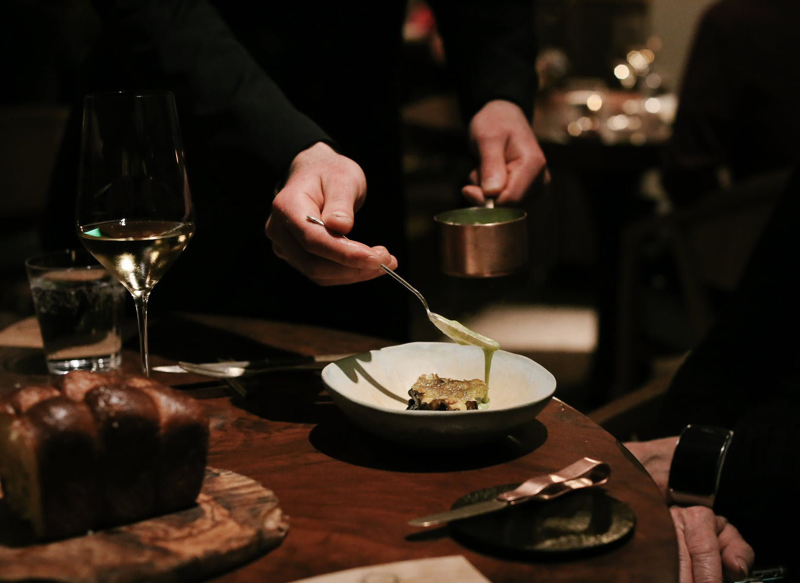

About us
KONOHA’s commitment to hospitality begins long before you sit down at our table, with keen attention to detail, warmth and hospitality, and with the goal of making happy memories for our guests.
The synergy between the chef and the kitchen is evident through his use of food as a means to share a story and reconnect guests with nature. Inspiration for the creations are often very personal and rooted in a sense of constant evolution. The wine list offers a tiered pairing as well as a curated selection of glasses and bottles from our cellar.
